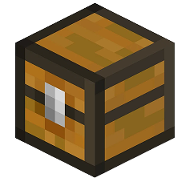

Pixmove · instant-игра · 18+
Falling Pickaxe — играть онлайн в падающую кирку
Falling Pickaxe (падающая кирка, фаллинг пикакс) — игра в стиле Майнкрафт: кирка летит в шахту, ломает блоки, каскады и TNT разгоняют множитель до ×5000. Демо запускается прямо здесь, без регистрации. На деньги — в браузере или Telegram, в рублях.
- ×5000максимум от ставки
- 10–20 сдлится раунд
- 30 FSпри первом заходе
- от 15 минвывод выигрыша
Falling Pickaxe демо: играть бесплатно
Официальное демо Pixmove на виртуальный баланс. Без регистрации, все механики: каскады, TNT, апгрейды кирки, сундуки.
Загружаем демо…
Откройте игру на площадке — там есть и демо, и игра в рублях.
Играть на сайтеНа реальном счёте это были бы деньги. При первом заходе — 30 бесплатных бросков кирки и бонус на депозит.
Забрать фриспиныУходишь в плюсе?В демо выигрыш остаётся на экране. На реальном счёте — 30 фриспинов при первом заходе.
Забрать 30 фриспиновЧто такое Falling Pickaxe
Falling Pickaxe — instant-игра без барабанов и линий. Каждый раунд кирка падает в шахту и бьёт по блокам под собой: камень, уголь, железо, золото, изумруд, алмаз. Разрушенный слой обрушивает верхние блоки, цепочка продолжается, множитель раунда растёт. Выигрыш — стоимость добытого, умноженная на множитель.
Чем глубже уходит кирка, тем дороже руда и выше пики. По пути встречаются TNT, которые взрывают целые пласты, сундуки с фриспинами и апгрейды кирки от деревянной до алмазной. Связка «алмазная кирка + TNT + каскад» и даёт до ×5000 ставки.
Игру выпустил провайдер Pixmove летом 2026 года, и за пару месяцев она стала самой обсуждаемой instant-игрой у стримеров: короткий раунд, узнаваемые блоки и заносы с TNT хорошо смотрятся в нарезках. В России её ищут как «Falling Pickaxe», «падающая кирка» и «фаллинг пикакс» — это одна и та же игра.
Играть можно с компьютера и телефона в браузере или в Telegram-боте площадки, без установки. Аккаунт и баланс общие, минимальная ставка — несколько рублей.
Как играть в Falling Pickaxe
- Попробуй демо. Сотня бросков покажет, как часто кирка доходит до золота и алмазов и сколько подряд бывает пустых раундов.
- Зарегистрируйся по кнопке «Играть». Почта, телефон или соцсеть, рублёвый счёт, минута времени. 30 фриспинов активируются при первом заходе в игру.
- Выбери ставку. Для ровной игры — 1–2% от банка сессии, для охоты за глубокими раундами — минимальная и лимит на число попыток.
- Брось кирку и следи за каскадами. Выигрыш зачисляется сразу после остановки кирки; вывод — тем же способом, что пополнение, от 15 минут.
Стратегия не меняет вероятности: раунд задан заранее на сервере Pixmove. Она управляет ставкой, лимитами и длиной сессии — подробнее в разделе «Стратегии».

Где играть на деньги
Игра подключена на площадке Lucky Bear: рублёвый счёт, пополнение картой, СБП и криптовалютой, вывод от 15 минут после одноразовой верификации.
- 30 фриспинов при первом заходе в Falling Pickaxe
- Пакет до 360% + 250 FS на первые четыре депозита
- Еженедельный кешбэк без отыгрыша
- Демо, браузер и Telegram на одном аккаунте
Разделы Falling Pickaxe
Вопросы о Falling Pickaxe
Что такое Falling Pickaxe?
Instant-игра провайдера Pixmove в стиле Майнкрафт: кирка падает в шахту, ломает блоки, каскады и множители до ×5000 определяют выигрыш.
Можно ли играть в Falling Pickaxe бесплатно?
Да, демо на этой странице работает без регистрации на виртуальный баланс, механика такая же, как на деньги.
Где играть в Falling Pickaxe на деньги?
На площадке Lucky Bear по кнопке «Играть»: рублёвый счёт, 30 фриспинов на старте, вывод от 15 минут.
Сколько длится раунд?
10–20 секунд: бросок, каскады, остановка кирки и зачисление выигрыша.
Какой максимальный выигрыш?
До ×5000 ставки в раундах с TNT, алмазной киркой и длинными каскадами.
Нужно ли устанавливать приложение?
Нет, игра открывается в браузере на компьютере и телефоне, а также в Telegram-боте площадки.
Это честная игра?
Результат раунда генерируется на сервере Pixmove до броска и не подстраивается под игрока; серии пустых раундов — часть распределения.